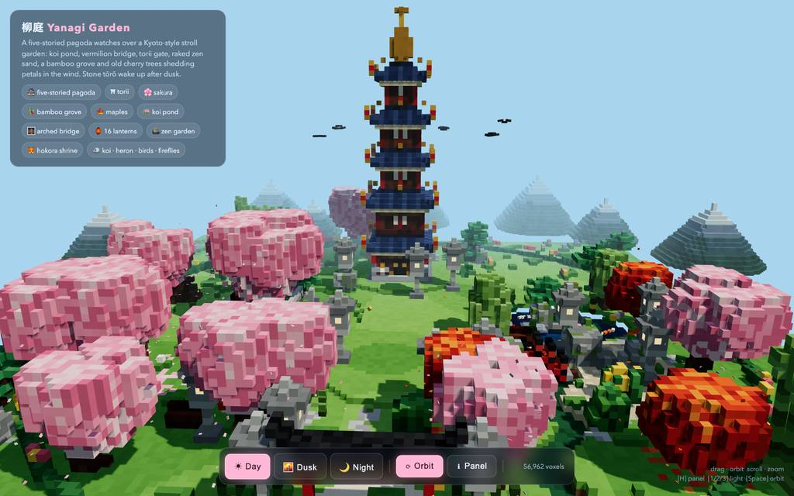
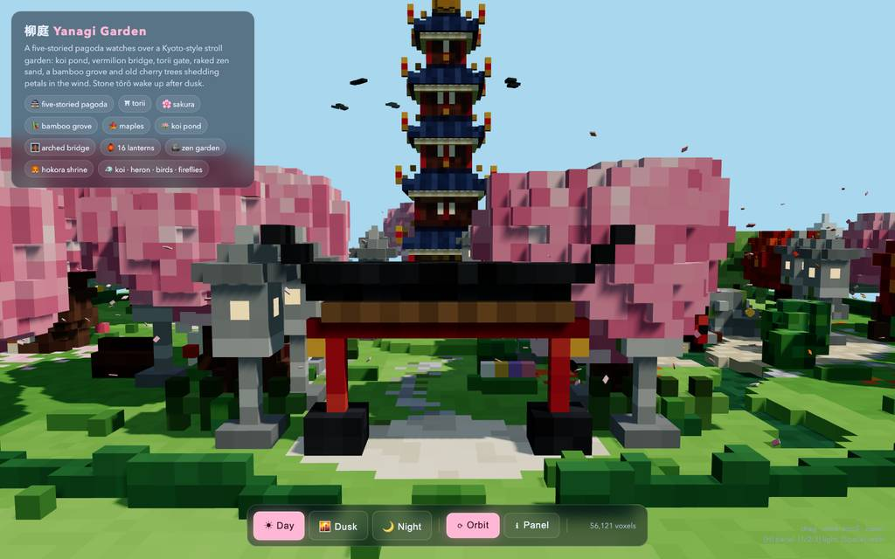
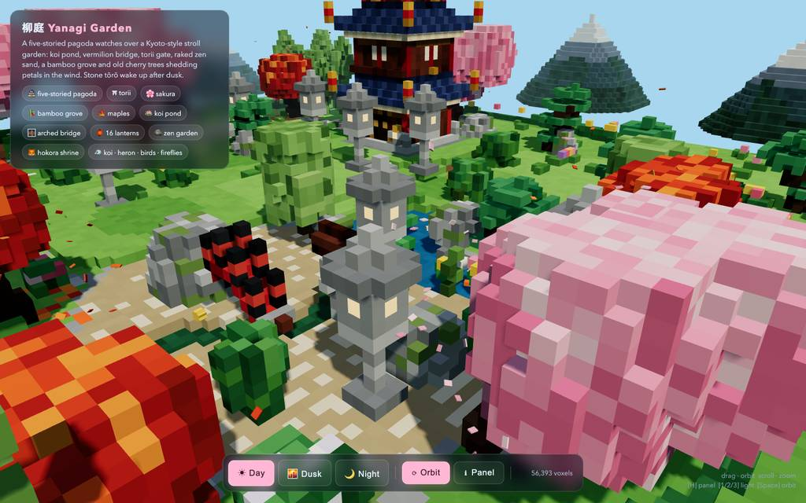
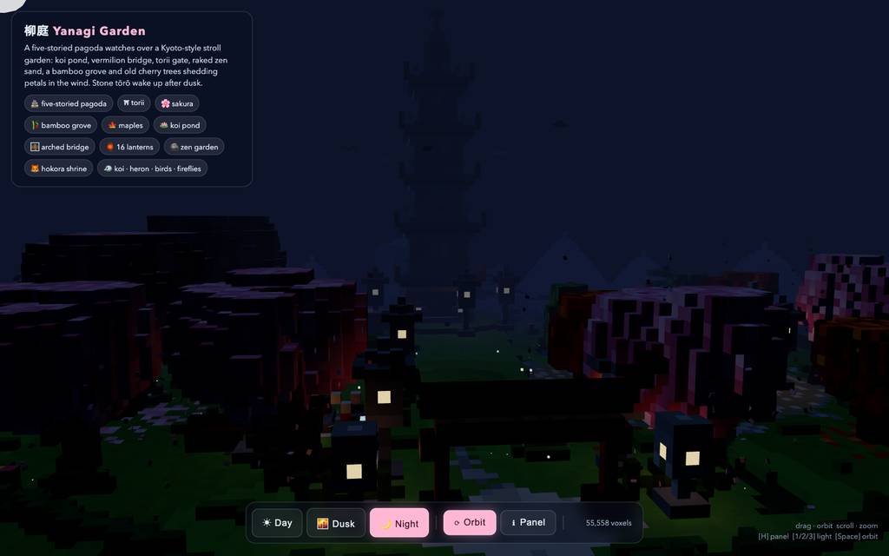
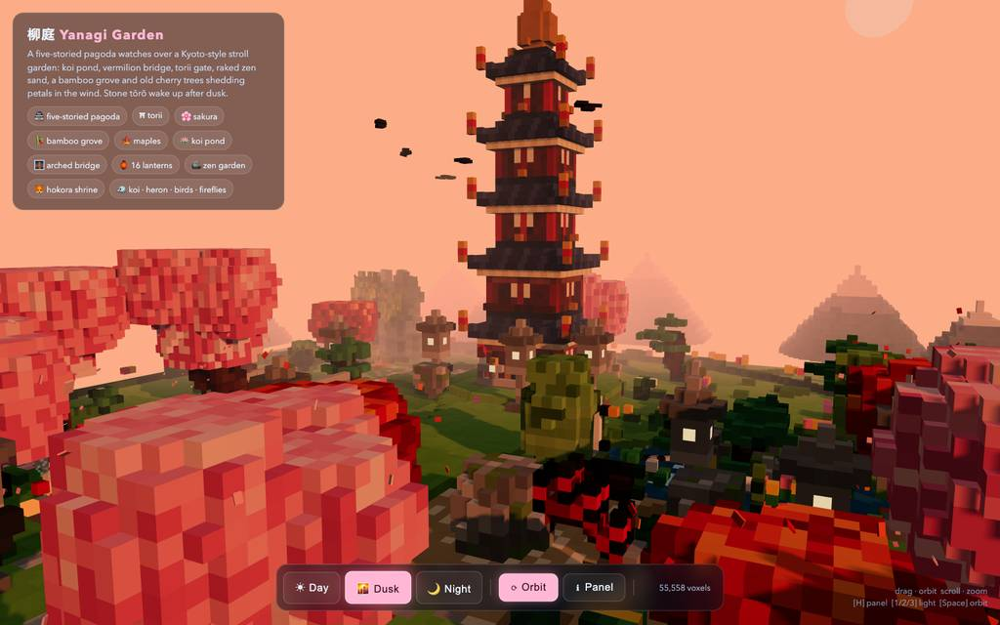
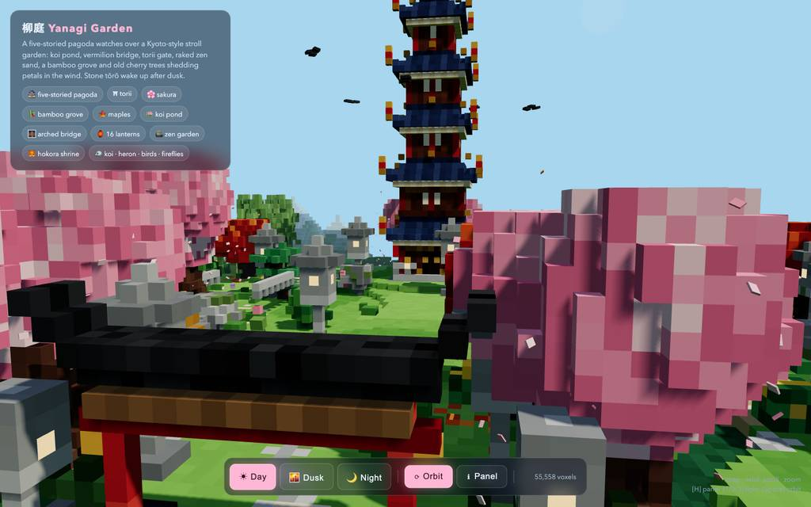

runs / 2026-10-19 / 170822-342000-baseline-80eaa55c
35分で48KBのボクセル庭園HTMLを完成。生成6割、検証と微調整4割
qwen3.8-flash-next（thinking high）が単一HTMLのボクセル五重塔庭園を、2109.5秒・66コール・出力98,502トークンでstatus=completed（exit 0）として終えた。#1〜#3の設計と2回の書き下ろしで前半を消費し、残り63コールは欠陥行の除去、ブラウザ実測、景観・夜間演出の修正に充てて pagoda-garden.html（48,643 bytes）を納品した。
成果物
work/pagoda-garden.html（48,643 バイト）をそのまま同梱している。重いシーンもあるため、必要なときだけ起動する。
pagoda-garden.html
48 KB · 起動するまで読み込まない












全 13 枚から等間隔に 12 枚を選んでいる。logs/events.jsonl の画像ブロックを内容ハッシュで重複排除して時系列に並べた、制作中の検証用スクリーンショット。最終版とは限らない。
成果物の構成
| 要素 | 内容 |
|---|---|
| ファイル構成 | 単一HTML 936行・48KB、Three.js r161をCDN import map経由で読み込み（初回のみネット接続要）。検証済みでコンソールエラーゼロを主張。 |
| 描画構成 | base/sway/glow/water の4ボクセルストアを座標キーで上書き順に構成し、それぞれ1つのInstancedMeshへflush（静的世界はdraw call 4）。55,558の重複除去後ボクセル。 |
| 五重塔 | 石段基壇と手すり、朱の柱グリッド、障子窓、内部照明のある雕み入口、金の斗拱帯、4層の藍屋根に金の反り先端と鈴、六輪の金願。 |
| 庭園要素 | 深さグラデーションの鯉池と松島、太鼓橋の沢、同心円の砂紋と石の禅園、曲線敷石の参道、扁額と注連縄付き鳥居、狐像・鈴・手水鉢のある祠。 |
| 植生 | 再帰分岐プロシージャルの桜8本と約900の花びらvoxel、庭師仕立ての松、楓4、枝垂れ柳2、笹2叢、低木・茸・苔・実の垣根、霧の山9。 |
| 動く生命 | 楕円群泳の鯉5、塔を周回する鳥、蝶、430+120枚の散る花びら、倒す鹿威し、波紋と水面のきらめき（water/swayはonBeforeCompileシェーダで変位）。 |
| 雰囲気と操作 | 火袋発光の石灯籠16とpoint light 16、Day/Dusk/Nightを空・霧・露出・星・日月で補間、自動回転付きOrbitControls、キーボード操作、window.VoxelZen公開。 |
モデルの最終メッセージから読み取った内容。コードの確認はしていない。
タイムライン
66 回の API 呼び出しを時間順に並べた。上段の帯の幅が各呼び出しの所要時間で、帯の間の空白がツールの実行時間。下段はその時点のコンテキスト長。
最も長い 2 回の生成（#3 535 秒・#2 374 秒）で 909.6 秒、壁時計の 43.1%。出力トークンの上位 4 回（#3・#2・#1・#4）で全体の 73.0%（71,897 / 98,502）。推論以外（ツール実行など）は約 96 秒（5%）。
フェーズ別の内訳
| フェーズ | 経過 | 所要 | 全体に占める割合 | 呼び出し | 出力 tok | 何をしたか |
|---|---|---|---|---|---|---|
| 設計と実装 | 0:00–20:37 | 1237 秒 | 58.7% | 3 | 69,182 | #1で計画とワークスペース確認、#2で初版HTMLを書き、#3でクリーンな単一ファイルへ全面的に書き直した。3コール計1237.0秒、出力69,182トークン。 |
| ソース修復 | 20:37–22:33 | 115 秒 | 5.5% | 10 | 4,792 | 初版に残ったnoop/エラー行やtsukubaiの欠陥を特定・削除した。editが2度拒否（E1・E2）されたためgrepで適用状況を確認して再編集し、#12で埋め込みモジュールの構文チェックを通した。 |
| ブラウザ起動 | 22:33–23:11 | 39 秒 | 1.8% | 6 | 1,150 | 共有ブラウザでのファイル読み込みが拒否（E3）され、#15でローカルhttp配信に切り替えて再読込した。页面側のTypeErrorを検出（E4）し、#18で昼景のスクリーンショットを撮った。 |
| 景観修正 | 23:11–29:29 | 378 秒 | 17.9% | 26 | 13,598 | column引数順バグ修正、debuグハンドル露出、torii周囲の平滑化と壊れた領域の修復（#30〜#34）、池の深さ・砂紋・灯籠密度の調整を行った。#27・#37・#42でedit拒否（E5〜E7）が発生し、いずれも再検索後に再適用した。 |
| 夜間演出 | 29:29–32:31 | 182 秒 | 8.6% | 13 | 6,308 | 灯籠ビルダーにサイズ引数を追加して門の灯籠を縮小し、桜を移動させた。夜景を明るくし、月を塔の後ろに置いて月光方向を合わせ、スクリーンショットで検証した。 |
| 最終検証 | 32:31–35:08 | 158 秒 | 7.5% | 8 | 3,472 | 夕暮れ・昼のヒーローショットと動きのある撮影、引きの確定ショットで全モードを確認した。ブラウザとテストサーバーを停止し、成果物の一貫性スキャン後に#66で最終報告を送った。 |
フェーズの切れ目は、ログから読み取れる作業内容の変わり目（LLM による区切り）。所要時間は、そのフェーズの最初の呼び出しの開始から次のフェーズの最初の呼び出しの開始まで。
66 回の呼び出しを表で見る
| # | 種別 | フェーズ | 開始 | 所要 秒 | prompt | うち cache | 出力 | tok/s | HTTP | ツール |
|---|---|---|---|---|---|---|---|---|---|---|
| 1 | 主ループ | 設計と実装 | 0:00 | 327.4 | 7,805 | 7,624 | 16,547 | 50.7 | 200 | todo + bash |
| 2 | 主ループ | 設計と実装 | 5:28 | 374.2 | 24,603 | 7,800 | 22,370 | 60.9 | 200 | write |
| 3 | 主ループ | 設計と実装 | 11:42 | 535.4 | 47,015 | 24,598 | 30,265 | 57.4 | 200 | write |
| 4 | 主ループ | ソース修復 | 20:37 | 66.1 | 77,322 | 47,010 | 2,715 | 49.9 | 200 | read |
| 5 | 主ループ | ソース修復 | 21:43 | 3.5 | 80,549 | 80,037 | 118 | 51.6 | 200 | read |
| 6 | 主ループ | ソース修復 | 21:47 | 7.3 | 80,978 | 80,666 | 299 | 47.9 | 200 | read + grep |
| 7 | 主ループ | ソース修復 | 21:54 | 7.2 | 82,053 | 81,277 | 307 | 52.9 | 200 | edit |
| 8 | 主ループ | ソース修復 | 22:02 | 4.2 | 82,495 | 82,362 | 170 | 50.0 | 200 | grep |
| 9 | 主ループ | ソース修復 | 22:06 | 6.7 | 83,352 | 82,666 | 301 | 55.2 | 200 | edit |
| 10 | 主ループ | ソース修復 | 22:13 | 8.1 | 83,709 | 83,656 | 383 | 52.8 | 200 | edit |
| 11 | 主ループ | ソース修復 | 22:21 | 3.0 | 84,414 | 84,091 | 113 | 55.9 | 200 | read |
| 12 | 主ループ | ソース修復 | 22:24 | 6.7 | 84,848 | 84,527 | 307 | 54.4 | 200 | bash |
| 13 | 主ループ | ソース修復 | 22:31 | 2.0 | 85,180 | 85,157 | 79 | 49.3 | 200 | read |
| 14 | 主ループ | ブラウザ起動 | 22:33 | 7.7 | 88,299 | 85,258 | 303 | 54.5 | 200 | eval |
| 15 | 主ループ | ブラウザ起動 | 22:40 | 3.3 | 88,904 | 88,602 | 133 | 55.4 | 200 | bash |
| 16 | 主ループ | ブラウザ起動 | 22:44 | 5.3 | 89,104 | 89,039 | 236 | 55.1 | 200 | eval |
| 17 | 主ループ | ブラウザ起動 | 23:00 | 4.7 | 89,605 | 89,339 | 205 | 55.3 | 200 | eval |
| 18 | 主ループ | ブラウザ起動 | 23:05 | 4.0 | 89,836 | 89,809 | 172 | 48.7 | 200 | eval |
| 19 | 主ループ | ブラウザ起動 | 23:09 | 2.0 | 90,024 | 90,007 | 101 | 57.3 | 200 | eval |
| 20 | 主ループ | 景観修正 | 23:11 | 28.2 | 90,928 | 90,124 | 1,243 | 46.7 | 200 | grep |
| 21 | 主ループ | 景観修正 | 23:39 | 5.9 | 93,231 | 92,171 | 234 | 56.1 | 200 | edit |
| 22 | 主ループ | 景観修正 | 23:45 | 10.2 | 93,798 | 93,465 | 435 | 47.3 | 200 | eval |
| 23 | 主ループ | 景観修正 | 24:03 | 12.2 | 95,033 | 94,235 | 535 | 50.5 | 200 | edit |
| 24 | 主ループ | 景観修正 | 24:15 | 5.7 | 95,689 | 95,569 | 236 | 47.9 | 200 | todo + read |
| 25 | 主ループ | 景観修正 | 24:21 | 3.5 | 96,324 | 95,925 | 123 | 53.7 | 200 | edit |
| 26 | 主ループ | 景観修正 | 24:25 | 6.1 | 96,595 | 96,447 | 267 | 50.5 | 200 | eval |
| 27 | 主ループ | 景観修正 | 24:38 | 49.4 | 97,665 | 96,864 | 2,217 | 46.3 | 200 | edit |
| 28 | 主ループ | 景観修正 | 25:28 | 3.7 | 100,031 | 99,882 | 139 | 49.2 | 200 | grep |
| 29 | 主ループ | 景観修正 | 25:31 | 22.0 | 101,125 | 100,170 | 1,022 | 49.7 | 200 | edit |
| 30 | 主ループ | 景観修正 | 25:53 | 11.1 | 102,894 | 102,147 | 478 | 49.1 | 200 | read |
| 31 | 主ループ | 景観修正 | 26:05 | 11.7 | 104,805 | 103,371 | 491 | 49.5 | 200 | read |
| 32 | 主ループ | 景観修正 | 26:16 | 3.1 | 105,932 | 105,295 | 90 | 50.4 | 200 | read |
| 33 | 主ループ | 景観修正 | 26:19 | 3.9 | 106,514 | 106,022 | 149 | 54.5 | 200 | read |
| 34 | 主ループ | 景観修正 | 26:23 | 12.1 | 107,576 | 106,664 | 560 | 52.5 | 200 | edit |
| 35 | 主ループ | 景観修正 | 26:36 | 4.1 | 108,963 | 108,135 | 146 | 55.0 | 200 | bash |
| 36 | 主ループ | 景観修正 | 26:40 | 7.4 | 109,128 | 109,108 | 353 | 50.0 | 200 | eval |
| 37 | 主ループ | 景観修正 | 26:55 | 23.1 | 110,284 | 109,480 | 998 | 46.3 | 200 | edit |
| 38 | 主ループ | 景観修正 | 27:18 | 4.1 | 111,433 | 111,282 | 149 | 47.6 | 200 | grep |
| 39 | 主ループ | 景観修正 | 27:22 | 5.6 | 111,767 | 111,581 | 226 | 48.3 | 200 | edit |
| 40 | 主ループ | 景観修正 | 27:28 | 6.9 | 112,221 | 111,993 | 298 | 50.0 | 200 | eval |
| 41 | 主ループ | 景観修正 | 27:42 | 31.7 | 113,321 | 112,518 | 1,451 | 48.0 | 200 | read + grep |
| 42 | 主ループ | 景観修正 | 28:14 | 16.1 | 115,817 | 114,772 | 725 | 50.8 | 200 | edit |
| 43 | 主ループ | 景観修正 | 28:30 | 7.6 | 116,614 | 116,542 | 376 | 54.3 | 200 | edit |
| 44 | 主ループ | 景観修正 | 28:38 | 4.6 | 117,684 | 116,989 | 183 | 55.7 | 200 | eval |
| 45 | 主ループ | 景観修正 | 28:50 | 38.4 | 118,015 | 47,010 | 474 | 47.8 | 200 | eval |
| 46 | 主ループ | 夜間演出 | 29:29 | 57.3 | 118,637 | 93,090 | 2,310 | 50.2 | 200 | read |
| 47 | 主ループ | 夜間演出 | 30:26 | 11.6 | 121,517 | 120,947 | 567 | 55.4 | 200 | edit |
| 48 | 主ループ | 夜間演出 | 30:38 | 10.4 | 122,376 | 122,084 | 449 | 48.6 | 200 | todo + grep |
| 49 | 主ループ | 夜間演出 | 30:48 | 8.0 | 123,431 | 122,825 | 311 | 47.0 | 200 | grep |
| 50 | 主ループ | 夜間演出 | 30:56 | 10.2 | 123,928 | 123,742 | 544 | 58.7 | 200 | edit |
| 51 | 主ループ | 夜間演出 | 31:06 | 5.6 | 125,094 | 124,474 | 224 | 52.2 | 200 | eval |
| 52 | 主ループ | 夜間演出 | 31:22 | 23.0 | 125,465 | 93,090 | 392 | 45.6 | 200 | grep |
| 53 | 主ループ | 夜間演出 | 31:45 | 9.2 | 126,289 | 125,858 | 444 | 55.1 | 200 | edit |
| 54 | 主ループ | 夜間演出 | 31:54 | 7.7 | 127,251 | 126,734 | 317 | 49.0 | 200 | grep |
| 55 | 主ループ | 夜間演出 | 32:02 | 5.4 | 127,707 | 127,568 | 224 | 49.6 | 200 | edit |
| 56 | 主ループ | 夜間演出 | 32:07 | 2.8 | 128,090 | 127,933 | 96 | 52.1 | 200 | grep |
| 57 | 主ループ | 夜間演出 | 32:10 | 4.2 | 128,329 | 128,185 | 171 | 52.4 | 200 | edit |
| 58 | 主ループ | 夜間演出 | 32:15 | 6.0 | 128,671 | 128,499 | 259 | 51.8 | 200 | eval |
| 59 | 主ループ | 最終検証 | 32:31 | 21.6 | 129,077 | 93,090 | 318 | 48.1 | 200 | eval |
| 60 | 主ループ | 最終検証 | 32:56 | 20.6 | 129,543 | 93,090 | 249 | 49.3 | 200 | eval |
| 61 | 主ループ | 最終検証 | 33:26 | 36.9 | 129,940 | 93,090 | 1,069 | 49.2 | 200 | eval |
| 62 | 主ループ | 最終検証 | 34:05 | 24.2 | 131,106 | 93,090 | 417 | 47.7 | 200 | eval |
| 63 | 主ループ | 最終検証 | 34:30 | 14.9 | 131,669 | 116,130 | 360 | 47.7 | 200 | eval + bash |
| 64 | 主ループ | 最終検証 | 34:45 | 4.0 | 132,059 | 132,028 | 172 | 49.9 | 200 | write + todo |
| 65 | 主ループ | 最終検証 | 34:49 | 4.5 | 132,382 | 132,231 | 183 | 50.9 | 200 | todo + bash |
| 66 | 主ループ | 最終検証 | 34:54 | 14.5 | 132,697 | 132,564 | 704 | 51.5 | 200 |
試行錯誤
ツールがエラー（isError）を返した結果の一覧。ツールは成功したのにモデル自身が内容を壊したケースは、ここには出ない。
エラーとして記録された 7 件
| 経過 | ツール | 起きたこと | 分類 |
|---|---|---|---|
| 22:02 | edit | #7のeditが、一度も表示していない行をアンカーに指定して拒否された。This edit anchors to lines 389 of pagoda-garden.html that [pagoda-garden.html#C811] never displayed (it showed a partial range, a search hit, or a folded summary). Actual file content at those lines: | アンカー外表示 |
| 22:12 | edit | #9のeditが、bodyを取らないCUT指示に本文を付けて構文拒否された。line 5: `CUT` deletes (and captures) the named lines and takes no body rows. To write new content, use `PUT N.=M:` with `+TEXT` rows. | edit指示 |
| 22:40 | eval | #14のevalが、共有ブラウザでは使えないファイルアクセスオプションを指定して拒否された。ToolError: browser.open({ allow_file_access:true }) requires a process-local Chromium launch and cannot be applied to the project-shared browser. Use app.path to launch a dedicated browser. at v (/$bu | API誤用 |
| 22:49 | eval | #16のHTTP読み込みで、页面側コンソールのTypeError（cons.sliceが関数でない）が検出された。Opened tab "pg" on headless browser (hidden, shared) URL: http://127.0.0.1:8765/pagoda-garden.html Title: Voxel Zen · Pagoda Garden TypeError: cons.slice is not a function. (In 'cons.slice(0,30)', 'co | 実行時エラー |
| 25:28 | edit | #27のeditが、表示外行アンカーの指摘で拒否され、#28でgrep再特定した。This edit anchors to lines 202, 380 of pagoda-garden.html that [pagoda-garden.html#8399] never displayed (it showed a partial range, a search hit, or a folded summary). Actual file content at those li | アンカー外表示 |
| 27:18 | edit | #37のeditも表示外行アンカーで拒否され、#38のgrep後に#39で再編集した。This edit anchors to lines 350 of pagoda-garden.html that [pagoda-garden.html#5159] never displayed (it showed a partial range, a search hit, or a folded summary). Actual file content at those lines: | アンカー外表示 |
| 28:30 | edit | #42のeditがhunkヘッダーなしの不正なPUT指示で拒否され、#43で修正成功した。line 1: payload line has no preceding hunk header. Use `PUT N.=M:`, `CUT N.=M`, or `PUT <N:`/`PUT >N:` above the body. Got "PUT 171-172=:". | edit指示 |
経過は、そのツールを呼んだターンの終了時刻。エラー本文は先頭 300 文字までで、パスや接続先は伏せてある。
気づいた点
計測データ（呼び出し一覧・エラー・最終メッセージ）だけから LLM が書いた読み取り。文中の数値は、上の KPI や表と照らして確認する。
生成量は前半に集中
#1〜#3が全体2109.5秒のうち1237.0秒（59%）、出力98,502トークンのうち69,182（70%）を消費した。特に#3の書き直し単体が535.4秒・30,265トークンで、#2の初書きの直後に全書換えした点は初版ファイルに欠陥があったことを示唆する。
edit拒否は再探索で回収
edit 18回のうち5回がツール拒否（E1 #7、E2 #9、E5 #27、E6 #37、E7 #42）。表示外アンカーの3回は直後にgrepで所在を再特定（#8・#28・#38）して再適用し、指示構文の2回も次コール（#10・#43）で成功しており、失敗がループ化していない。
検証はブラウザ実測
E3（#14）のあと#15でローカルhttp配信に切り替え、#16で页面のTypeErrorを検出し、#17でエラーとstatsを読み取っている。eval計18回・スクリーンショット13枚を撮り、昼（#18）→夜（#51）→夕暮れ（#59）→最終引き（#62）とモードごとに確認した。
終盤は見た目の微調整
#46〜#62の17コールが灯籠サイズ・桜位置・月位置・夜景の明るさといったルック調整に費やされ、単発は2.8〜57.3秒、出力も大半600トークン未満と短い。#53〜#57の5コールが月光・月の位置合わせに連続で使われた。
コンテキストに余裕
ピークコンテキスト132,697は窓1,048,576の約13%で、66コールすべてHTTP200、補助呼び出し0、未完了なし。最終メッセージ前の#66は14.5秒・704トークンで、打ち切り要因はなかった。
入力と設定
Design and create a very creative, elaborate, and detailed voxel art scene of a pagoda in a beautiful garden with trees, including some cherry blossoms. Make the scene impressive and varied and use colorful voxels. Add as many details as possible to showcase your attention to them. Use whatever libraries to get this done but make sure I can paste it all into a single HTML file.
input/prompt.md の全文。SHA-256 は ceece4685b37…。
| omp の起動オプション | --print --mode json --thinking high --no-title --approval-mode yolo |
| upstream | （接続先は伏せている） |
| タイムアウト | 10,800 秒 |
config/00-omp.yml
setupVersion: 2 autolearn: enabled: false autoContinue: false